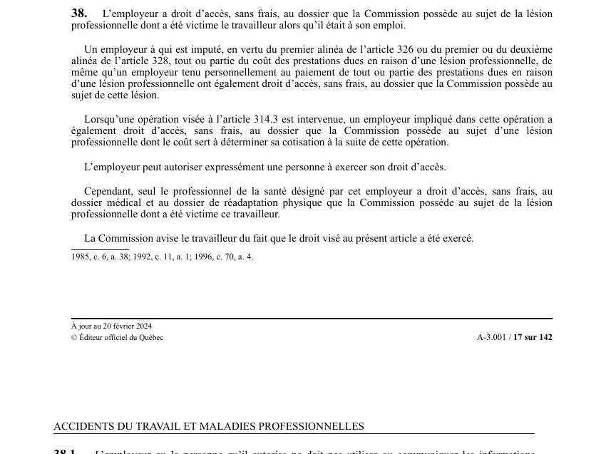

art-38-LATMP : accès de l'employeur au dossier de lésion
Ouvre à l'employeur, et à lui seul dans certaines limites, le dossier que la CNESST détient sur la lésion professionnelle d'un de ses travailleurs. L'accès est gratuit dans tous les cas.
- Employeur au moment de la lésion : accès sans frais au dossier de la lésion dont le travailleur a été victime alors qu'il était à son emploi.
- Employeur imputé : même accès sans frais lorsqu'il est imputé en vertu du 1er alinéa de l'art. 326 ou des 1er ou 2e alinéas de l'art. 328, ou tenu personnellement au paiement des prestations.
- Opération de l'art. 314.3 : l'employeur impliqué a aussi accès sans frais au dossier dont le coût servira à déterminer sa cotisation.
- Deux filtres : l'employeur peut autoriser expressément une personne à exercer son droit, mais le dossier médical et le dossier de réadaptation physique ne sont ouverts qu'au professionnel de la santé qu'il désigne.
- La CNESST avise le travailleur du fait que ce droit d'accès a été exercé.
🌐 LegisQuébec · 📄 PDF officiel (page 17)
Texte officiel
L’employeur a droit d’accès, sans frais, au dossier que la Commission possède au sujet de la lésion professionnelle dont a été victime le travailleur alors qu’il était à son emploi.
Un employeur à qui est imputé, en vertu du premier alinéa de l’article 326 ou du premier ou du deuxième alinéa de l’article 328, tout ou partie du coût des prestations dues en raison d’une lésion professionnelle, de même qu’un employeur tenu personnellement au paiement de tout ou partie des prestations dues en raison d’une lésion professionnelle ont également droit d’accès, sans frais, au dossier que la Commission possède au sujet de cette lésion.
Lorsqu’une opération visée à l’article 314.3 est intervenue, un employeur impliqué dans cette opération a également droit d’accès, sans frais, au dossier que la Commission possède au sujet d’une lésion professionnelle dont le coût sert à déterminer sa cotisation à la suite de cette opération.
L’employeur peut autoriser expressément une personne à exercer son droit d’accès.
Cependant, seul le professionnel de la santé désigné par cet employeur a droit d’accès, sans frais, au dossier médical et au dossier de réadaptation physique que la Commission possède au sujet de la lésion professionnelle dont a été victime ce travailleur.
La Commission avise le travailleur du fait que le droit visé au présent article a été exercé.
Texte de l’article 38 LATMP, extrait de la couche texte du PDF officiel (page 17), sans OCR ni retouche. La capture ci-dessous et le PDF font foi.
{kind=link}

Toucher l'image pour l'agrandir🔗 Ouvrir a cette page : LATMP.pdf : page 17 · texte a jour au 20 février 2024
Voir aussi
- art. 37 · droit : un employeur a droit d'accès, sans frais, au dossier que la CNESST possède relativement à sa classification, sa cotisation et l'imputation des coûts qui lui est faite, de même qu'une personne qu'il autorise expressément.
- art. 39 · faculté : le professionnel de la santé désigné par l'employeur lui fait rapport sur le dossier médical et de réadaptation auquel la CNESST donne accès, et peut lui en remettre un résumé et un avis pour exercer ses droits.
- art. 326 · imputation employeur.
- 🔢 Sous-article : art. 38.1 · interdiction : l'employeur ou la personne qu'il autorise ne doit pas utiliser ou communiquer les informations reçues en vertu de l'article 38 à d'autres fins que l'exercice des droits que la présente loi confère à cet employeur.
- 🔧 Modifié par : LMRSST art. 12 · modifie art.
- ↑ Loi : LATMP
Pages qui pointent ici (6)
- art-12-LMRSST : modifie l'art. 38 LATMP Recueil législatif
- art-37-LATMP : accès de l'employeur à son dossier Recueil législatif
- art-39-LATMP : rapport du professionnel de la santé désigné Recueil législatif
- art-41-LATMP : délai raisonnable de communication Recueil législatif
- art-43-LATMP : primauté sur la Loi sur l'accès Recueil législatif
- LMRSST : Chapitre I : Modifications à la LATMP Recueil législatif